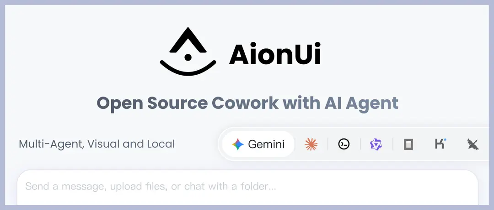
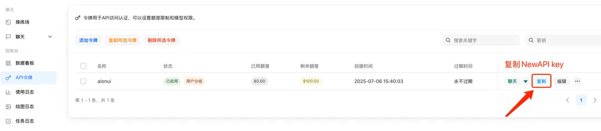
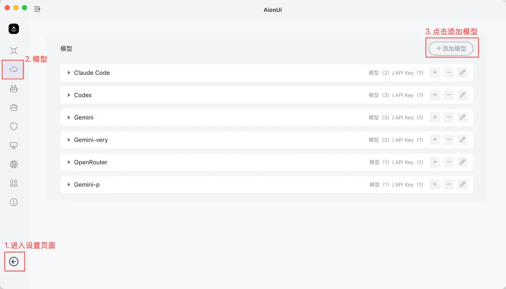
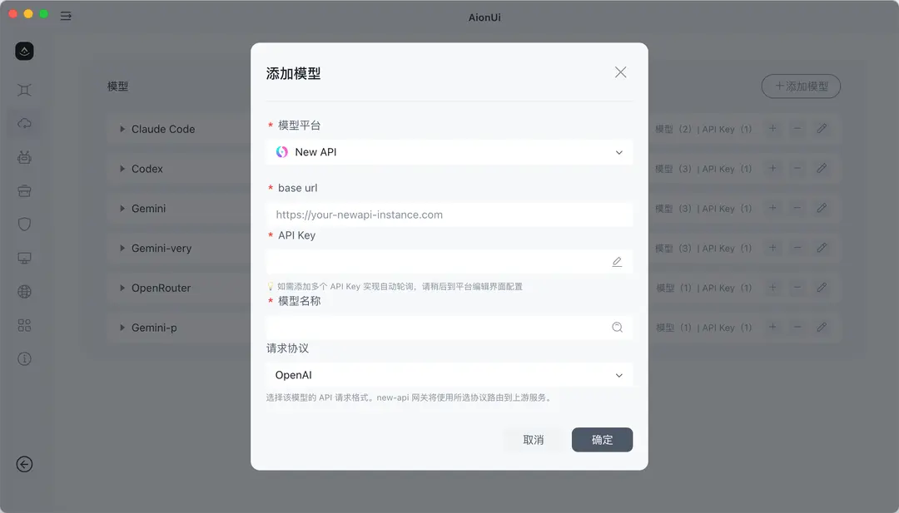

桌面
AionUi 接入教程
完整复刻源站 AionUi 教程密度：核心特性、多代理能力和词元.fast NewAPI 接入步骤。
办公 Agent多代理桌面
项目介绍
🚀 AionUi 是一款免费、本地、开源的Cowork，支持 Gemini CLI、Claude Code、Codex、OpenCode、Qwen Code、Goose CLI、Auggie 等多种 AI 代理。它提供了完整的 GUI 界面和 WebUI 远程访问功能，是 Cowork 的开源替代方案。
- GitHub 仓库：https://github.com/iOfficeAI/AionUi

核心特性
💬 多会话聊天
- 多会话 + 独立上下文 - 可同时打开多个聊天会话，每个会话拥有独立的上下文记忆
- 本地存储 - 所有对话数据保存在本地 SQLite 数据库中，不会丢失
🤖 多模型支持
- 多平台支持 - 支持 Gemini、OpenAI、Claude、Qwen 等主流模型，灵活切换
- 本地模型支持 - 支持 Ollama、LM Studio 等本地模型部署
🤝 多代理模式
- 同时运行多个 AI 代理 - 可同时运行多个 AI 代理（如 Gemini CLI、Claude Code、Codex、OpenCode、Qwen Code、Goose CLI、Auggie 等）
- MCP 统一管理 - 通过 Model Context Protocol (MCP) 统一管理和配置所有代理，简化操作流程
- Skills 配置 - 支持为不同代理配置专属的 Skills，扩展代理能力
- 助手自定义 - 支持自定义助手配置，打造个性化的 AI 工作流
- 独立配置 - 每个代理可独立配置和使用，互不干扰
- 灵活切换 - 在不同代理之间灵活切换，满足不同场景需求
🗂️ 文件管理
- 文件树浏览 + 拖拽上传 - 像文件夹一样浏览文件，支持拖拽文件或文件夹一键导入
- 智能整理 - 可让 AI 帮助整理文件夹，自动分类
📄 预览面板
- 9+ 格式预览 - 支持 PDF、Word、Excel、PPT、代码、Markdown、图片等格式
- 实时跟踪 + 可编辑 - 自动跟踪文件变化，支持实时编辑和调试 Markdown、代码、HTML
🎨 AI 图像生成与编辑
- 智能图像生成 - 支持 Gemini 2.5 Flash Image Preview、Nano、Banana 等多种图像生成模型
- 图像识别与编辑 - AI 驱动的图像分析和编辑功能
🌐 多渠道访问
- WebUI 远程访问 - 可通过浏览器从网络上的任何设备访问，支持移动设备
- Telegram 集成 - 支持通过 Telegram 机器人进行交互
- 飞书集成 - 支持通过飞书进行访问和交互
- 本地数据安全 - 所有数据存储在本地 SQLite 数据库中，适合服务器部署
词元.fast API 接入方法
参数填写
提供商类型：词元.fast API 支持的类型 API 密钥：于 词元.fast API 获取 API 地址：词元.fast API站点地址（例如：https://ciyuan.fast/v1）
配置步骤
1. 在 词元.fast API 中复制 API key

2. 打开 AionUi 设置
- 在 AionUi 中进入设置页面
- 找到 模型配置 Tab
- 点击"添加模型"

3. 添加新的提供商
- 点击"添加模型"
- 选择 NewAPI

4. 配置 API 信息
- API 地址：填写您的 词元.fast API 站点地址（格式：https://ciyuan.fast/v1`）
- API 密钥：粘贴从 词元.fast API 控制台复制的 API Key
5. 添加模型
- 下拉选择需要添加的模型
- 模型名称应与 词元.fast API 中配置的模型名称一致
- 选择合适的请求协议
6. 开始使用
- 返回聊天页面
- 选择已配置的 词元.fast API 模型开始对话